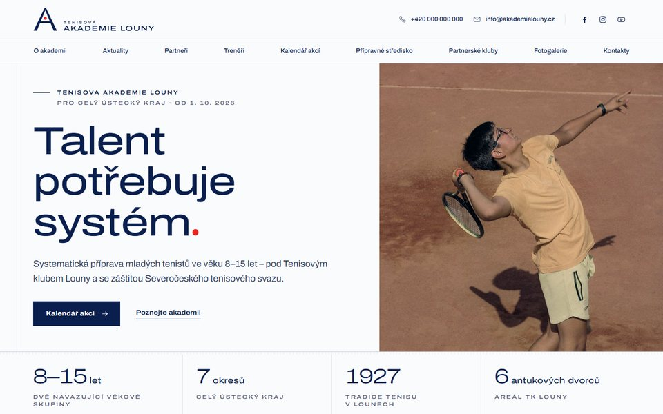
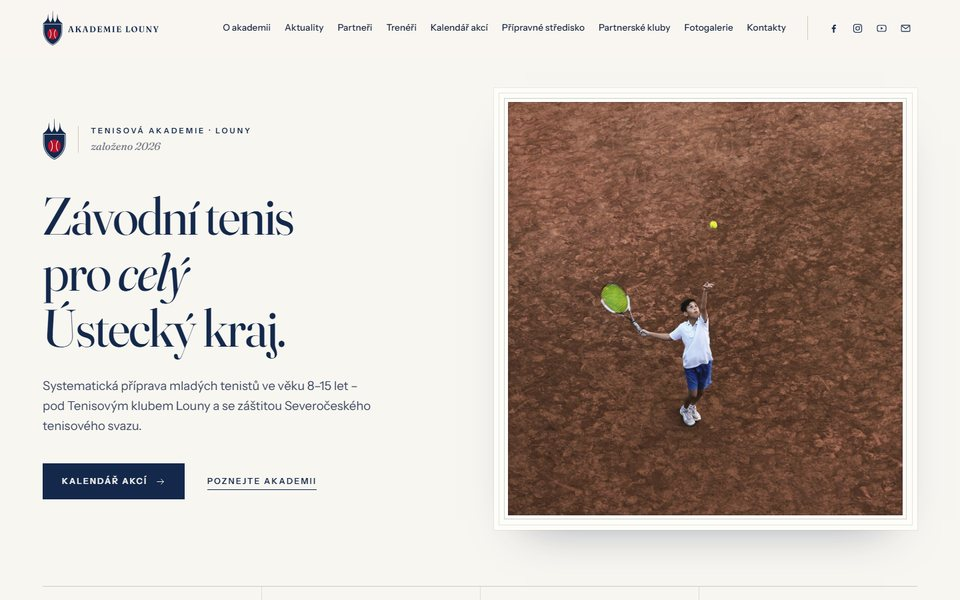
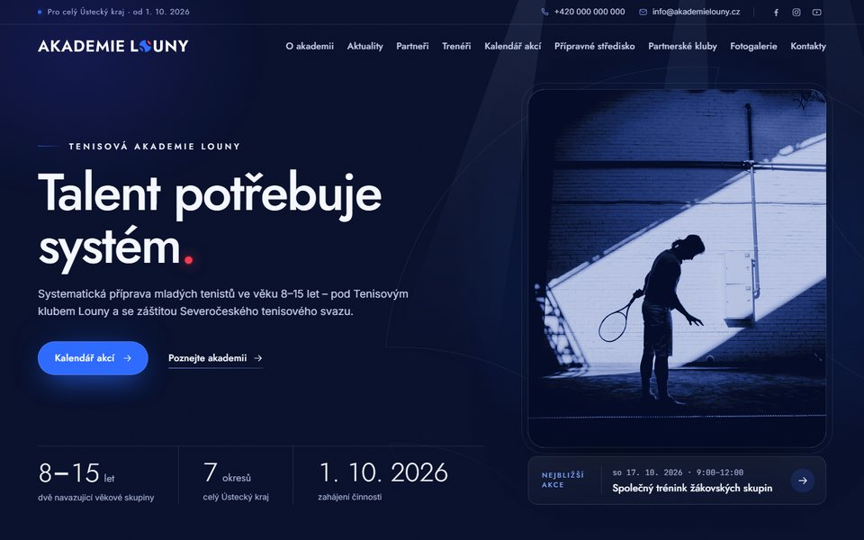
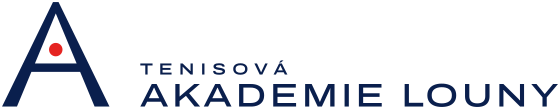
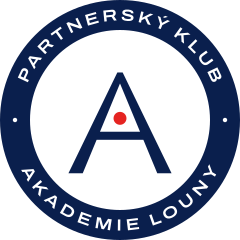
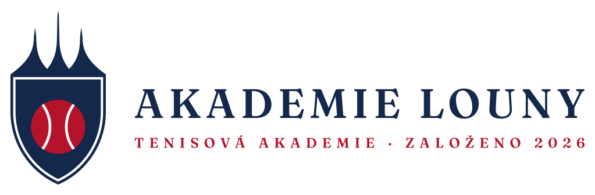
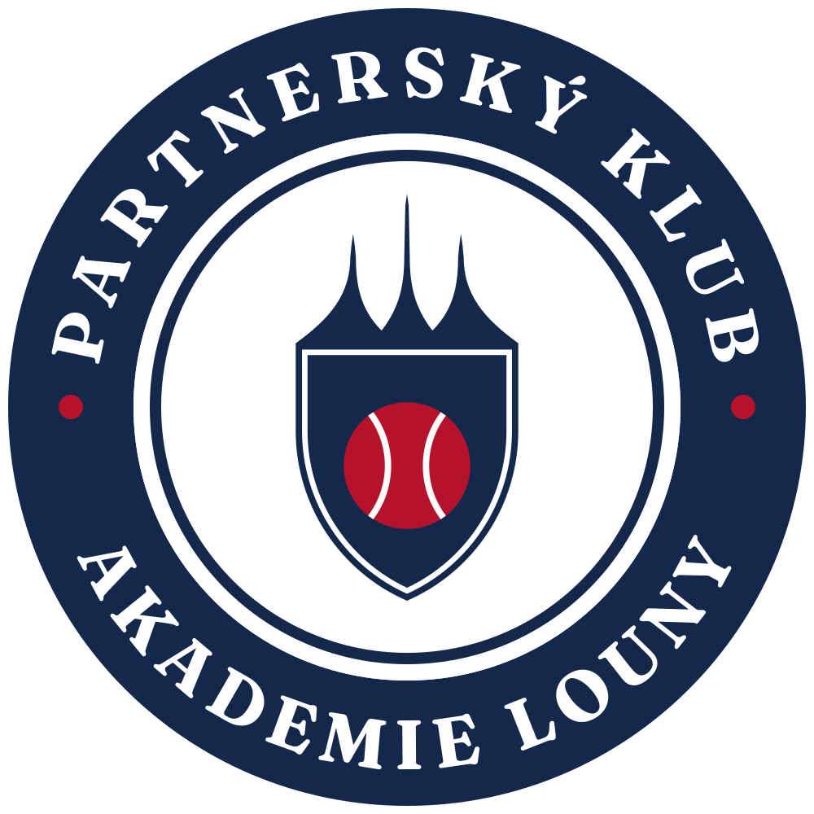
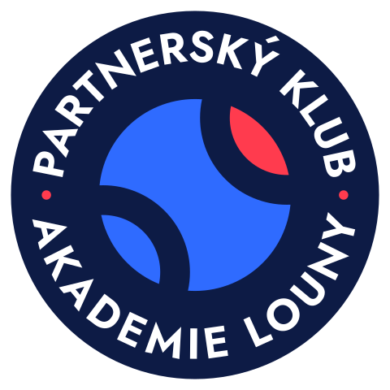

Tři návrhy úvodní stránky

Kurt
Bílá, inkoustová navy a jediná červená tečka – míček z loga. Přesná mřížka, vlasové čáry kurtu a velké písmo. Nejčistší a nejsportovnější ze tří.
Otevřít návrh
Erb
Porcelán, hluboká navy a heraldická červená, serifové písmo a erb se siluetou lounského chrámu. Sekce v pořadí menu, číslované I–IX. Prestiž soukromé akademie.
Otevřít návrh
Hala
Noční navy, elektrická modř a červená jiskra jako světla haly v zimní sezoně. Skleněné panely, svítící časová osa a mapa kraje jako síť budoucích partnerských klubů.
Otevřít návrhTři koncepty loga
Akademie zatím logo nemá, proto každý návrh webu nese vlastní koncept: logo akademie a k němu odznak Partnerský klub pro kluby z regionu. Všechny jsou vektorové, s textem převedeným do křivek, mají barevnou i jednobarevnou verzi a jsou dost jednoduché pro tisk i výšivku.


Logo II · Partnerský klubodznak pro kluby z regionu01 · Kurt
Písmeno A jako tenisový kurt v perspektivě: postranní čáry tvoří nohy, síť břevno a červený míček leží ve vzdáleném poli.
Arch loga →


Logo II · Partnerský klubodznak pro kluby z regionu02 · Erb
Štít korunovaný siluetou trojdílné stanové střechy chrámu sv. Mikuláše, nejznámější lounské dominanty. V poli červený tenisový míč.
Arch loga →


Logo II · Partnerský klubodznak pro kluby z regionu03 · Hala
Písmeno O ve slově LOUNY nahrazuje tenisový míček s jedinou červenou čočkou. Název a sport v jednom slově.
Arch loga →
Co je v náhledech ukázkové
- Texty o akademii a partnerských klubech jsou ze zadání akademie, jen typograficky upravené.
- Kalendář zimní sezony 2026/2027 ukazuje rozložení akcí. Termíny jsou ukázkové, ale kempy a soustředění sedí na skutečné školní prázdniny v okrese Louny.
- Trenéři a kontakty mají zástupná jména a telefon +420 000 000 000. Skutečný je jen Vojta Vágner.
- Partneři jsou zatím volná místa pro loga.
- Fotky jsou ilustrační (Unsplash, Pexels). Nahradí je vlastní fotky z tréninků a areálu.
- Formuláře přihlášek jen předvádějí chování, nic se neodesílá.
Co budeme potřebovat od akademie
- Přesný název a výběr loga. Pozor, v adresáři ČTS už je klub „Tenisová akademie Březno u Loun“.
- Text přípravného střediska od Vladana a jeho celé jméno.
- Trenéry (jména, trenérské třídy, představení, fotky) a kontakty (kdo co má na starosti, telefony, e-maily).
- Program zimní sezony a sociální sítě akademie.
- Potvrzení dvou oprav v textu: „tréninkové středisko mládeže“ (oficiální název ČTS) a schválení akademie výkonným výborem SETES 20. 9. 2026.
- Věk skupin: zadání uvádí starší žáky 13–15 let, kategorie ČTS „starší žactvo“ je 13–14 let.